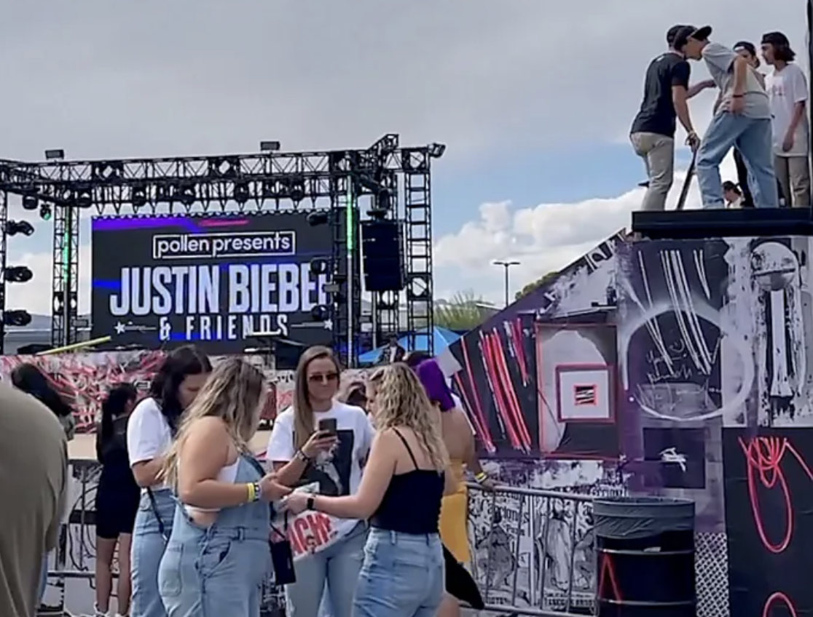
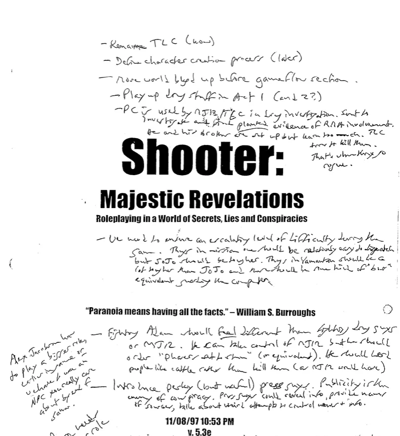
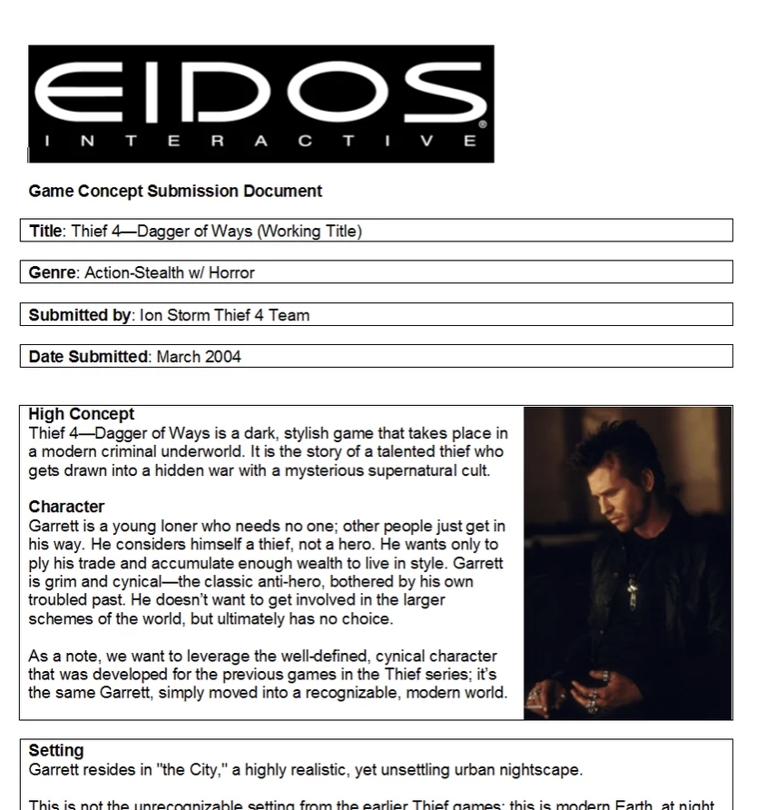
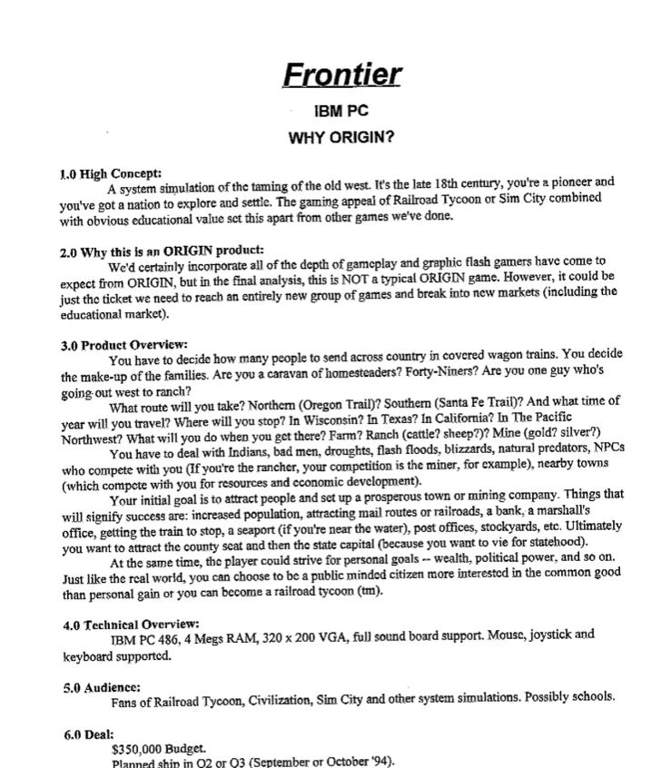

PostHog
I joined PostHog as the first marketing hire, back when all it did was analytics. Now, I lead the marketing team, we’re building every tool developers need to ship better products, and we’re valued at over $1.6bn.
Teams at PostHog wear many hats, so I’ve done everything from launching our startup program to shipping product features like the in-app roadmap. I also built the foundations of our content, demand gen, customer support, partnerships, and product marketing teams.
My PostHog profile →
DESKHOG
I’ve worked on a lot of projects at PostHog, but DeskHog is one of my favourites.
DeskHog is a tiny open-source micro-computer made in Danilo Campos’ basement and forced into reality as part of PostHog’s Do More Weird ethos. The basic idea was: “What if PostHog made a tamagotchi?”
I led the hackathon team that built all the launch software (including three games of my own) and then led the marketing and release. We ended up hitting Hacker News and selling out in less than an hour.
Pollen
I joined Pollen as the second marketing hire, back when it was called Verve and just did B2B marketing for music festivals. By the time I left it had rebranded twice and had raised over $630m in funding.
At Pollen I worked mostly on the B2B and brand side of the business, so when we acquired teams such as Campus Vacations and JusCollege I led the merging of the brands and marketing teams. Admittedly, things didn’t end well for Pollen, but I only found out about that years after I left.
Watch the BBC documentary →
Laundrapp
On-demand laundry · LondonI joined Laundrapp as the second marketing hire, back before it had launched or even had a proper name. It was an on-demand laundry app, which doesn’t sound very sexy but was a lot of fun to build back in 2014.
Laundrapp launched first in London, so my job as content marketer was to spread the awareness. This often involved stunts, such as extreme ironing across the city, which helped us grow beyond just London. When I left we were expanding internationally and working on a successful exit.
We got acquired by these guys →
THE VIGIL
I like making micro-games and one-off pieces just for me. This is one of them – something to play while I wait for others to join a call, or whatever. It runs on a Pimoroni Presto, which I have on my desktop.
The Vigil is an idle turn-based RPG about a knight travelling through a plague-ridden kingdom in search of a citadel. Each turn is an encounter where you choose between honourable (risky), cunning (unpredictable), or craven (safe) responses. Along the way you recruit companions who may reveal backstories if your choices align to their values. There’s also a tiny turn-based immersive sim built-in too.
Check the repo


Unlimited Hyperbole was a games podcast which ran for four seasons. The idea was to turn the usual rambling structure of games podcasts on its head and cut long, multi-hour interviews down to an intensely focused format.
Guests included Kieron Gillen, Brendon Chung, Jordan Thomas, Rob Briscoe, Tom Jubert, Dan Pinchbeck, and loads more. It was created in collaboration with Harriet Jones and produced out of my bedroom.
The Escapist and Metro both labelled it as the best games podcast of the year, but most episodes have since been lost to the aether.
Listen to the show →Split Decision
Split Decision was a mobile game I worked on as a copywriter, researcher, and UX specialist. It was published by Mental Floss Magazine.
Essentially a quiz game, Split Decision asked you to choose between obscure choices like: Is Boccob a type of potato, or a deity in Dungeons & Dragons? or Is Curse of the Wererabbit a Bafta winner, or a Razzie winner?
It was fun to work on and Starbucks selected it as a free app of the day, back when those things mattered. They even made a board game version of it, but I didn’t work on that and haven’t ever actually played it. Oh well.
Buy the board game →Fractured Skyline
Fractured Skyline was a mobile game by Preliminal Games which I worked on as a lead writer. Players acted as the CEO of a corporation and would fight others in a strategy game with CCG elements.
The game featured a geolocation mechanic that built procedural maps based on the players’ actual location. In 2015 it won the UK Diamond MassChallenge Award.
The game unfortunately never launched, as our ambitions were a bit ahead of our abilities. We did produce a concept trailer to shop around to publishers though, but were ultimately unsuccessful in securing funding for the project.
Watch the trailer →
Crywankface
Crywankface was a regrettable game I made with Craig Lager. It began as a drunken joke about Crytek’s Warface and launched 24 hours later.
Despite being crude in every sense, Crywankface nevertheless found critical acclaim. It was covered in RPS, Vice, and PC Gamer Magazine – the latter of which called it one of their favourite indie games of the month. Baffling.
Crywankface isn’t the sort of thing I’d normally mention on a portfolio, but people seem to like it. Fans even made their own Pico-8 port of the original. No, I don’t know why.
Play CrywankfaceGames preservation
I’m passionate about games preservation as a topic and have joined a number of initiatives to help further the cause.
I’ve spoken at several VideoBrains conferences about efforts to preserve games, and was asked to write a foreword for the book Videogames You Will Never Play by the Unseen64 Collective.
My work has extended into several investigative pieces that seek to document how games are made. Most notably I’ve covered Deus Ex, Thief, Habitat, Doom, and the abandoned games of Origin Systems for Eurogamer and others.
Check the archives →


Editorial work
Back when I still had hair, I used to write for tech magazines and websites such as PC Gamer, PC Format, Bit-tech.net, PC Pro, TrustedReviews, Den of Geek, Gamer Network, and many more.
I was senior editor for Dennis Publishing’s games brands and had a regular column in Custom PC Magazine covering trends in games media.
I’ve written tech coverage for The Guardian, Sky, Conde Nast, Vice, and Future Publishing. I was a regular expert guest for BBC Radio 4’s GameON show with Adam Rosser. I still do occasional freelance writing, if you’re interested.